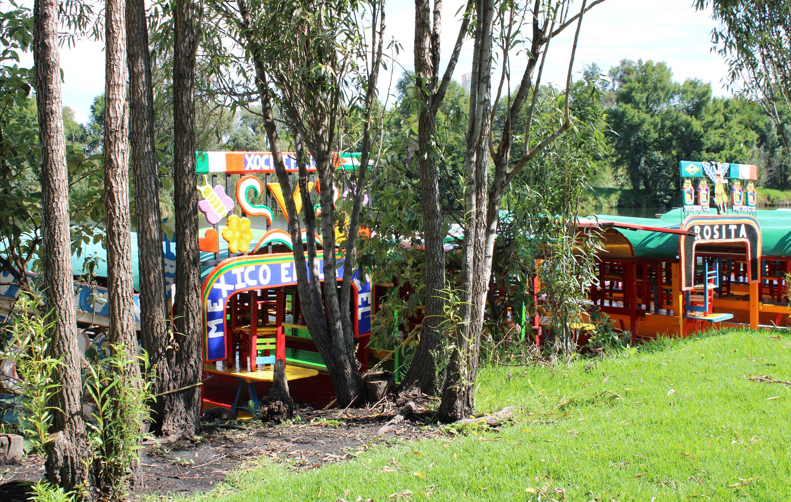
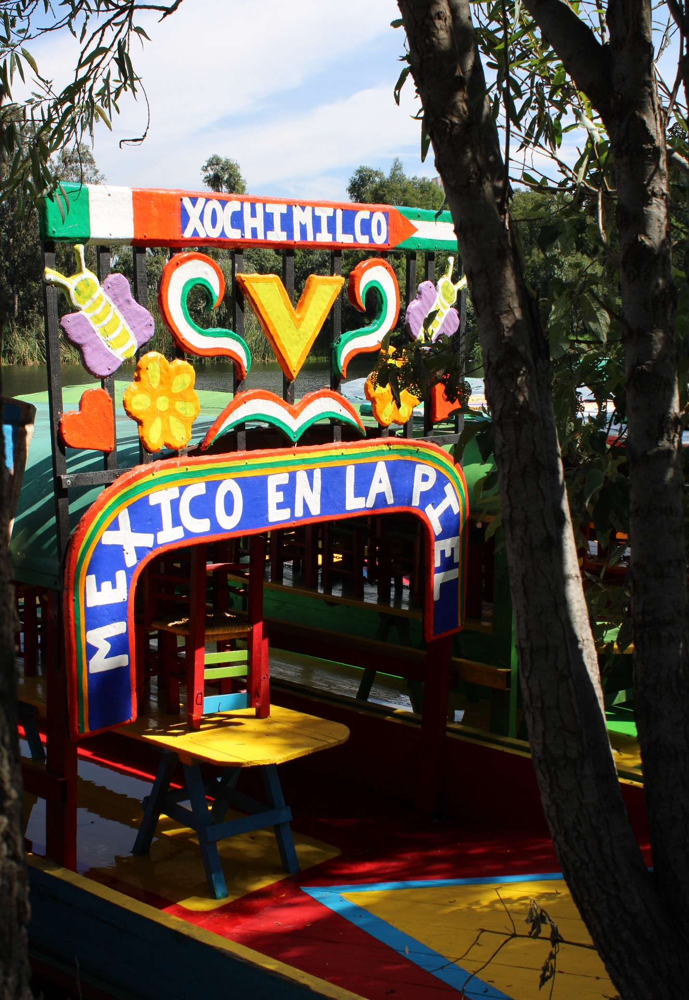

Galería del humedal








En el corazón del sur de la Ciudad de México, Xochimilco resiste. A pesar del deterioro ecológico causado por el cambio climático y el crecimiento urbano, los pueblos originarios, como los náhuatl de San Gregorio Atlapulco, Tlaxialtemalco o Cuemanco, siguen sosteniendo una relación profunda y respetuosa con su entorno lacustre.
Desde la agricultura chinampera hasta la conservación del ajolote, estas comunidades han creado estrategias propias de adaptación y defensa territorial. El ajolote, especie endémica y símbolo sagrado del agua, está en grave peligro de extinción, pero su protección ha sido asumida por iniciativas comunitarias que combinan el conocimiento tradicional con la ciencia participativa.
Chinampas refugio, sistemas de filtración natural y monitoreo ecológico forman parte de una red de cuidado que defiende no solo al ajolote, sino a todo el ecosistema del humedal. Proyectos como Chinampas en Movimiento, Chinampa Refugio o Fuego Vivo integran agroecología, ritualidad, educación y ciencia comunitaria para mantener viva la biodiversidad y la memoria del agua.
Estos saberes, anclados en una cosmovisión que entiende el territorio como un todo, son ejemplos de resiliencia biocultural. Visibilizarlos mediante el diseño de comunicación gráfica no solo reconoce su valor, sino que permite que más personas escuchen, comprendan y se sumen al cuidado del mundo que aún resiste.